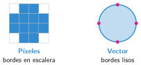
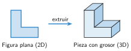

Diseño 2D: vectores y contornos
🤔 Pienso5 min
Qué hago aquí: Piensa un momento y contesta con lo que ya sabes. No pasa nada si no lo sabes: es para empezar.
Amplía mucho una foto en el ordenador. ¿Cómo se ven los bordes?
📖 Leo y aprendo15 min
Qué hago aquí: Lee despacio, mira los dibujos y los ejemplos, y quédate con la idea clave del final.
Un dibujo plano tiene dos medidas: largo y ancho. Es un dibujo en 2D. El ordenador puede guardarlo de dos formas.

Las máquinas siguen el contorno: el borde de la figura. El contorno tiene que estar cerrado, sin huecos en la línea.
Un dibujo plano se convierte en pieza al darle grosor. Esto se llama extrusión.

✏️ Hago25 min
Qué hago aquí: Haz las actividades en orden. Empieza siempre por las básicas.
Escribe P (píxeles) o V (vector) junto a cada archivo.
foto_playa.jpglogo.svgcaptura.pngplano.svg
Rodea los contornos cerrados. Tacha los abiertos.
En Tinkercad, pon la forma Texto y escribe tu nombre. Dale 3 mm de alto. Debajo, pon una caja de 2 mm de alto como base. Marca cuando lo tengas:
Con la forma Garabato, dibuja una hoja de árbol. Junta el final con el principio. Dale 4 mm de grosor. Marca cuando lo tengas:
¿Por qué una máquina no puede fabricar un contorno abierto?
✏️ Puedes responder escribiendo, con un dibujo o un esquema, o contándolo en voz alta.
🚀 Amplío (si quieres saber más)
Qué hago aquí: ¿Has terminado? Lee la curiosidad o elige el reto. Es voluntario.
Importa en Tinkercad el archivo logo_simple.svg de la web de clase. Dale 3 mm de grosor. Añade un cilindro para la anilla y conviértelo en un llavero.
✅ Compruebo5 min
Qué hago aquí: Contesta sin mirar la ficha y marca cómo lo llevas.